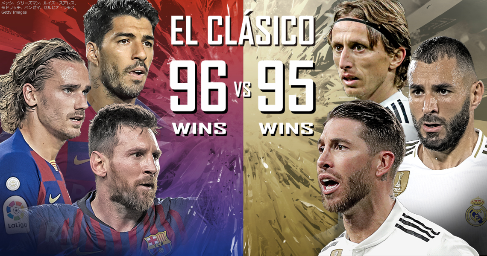
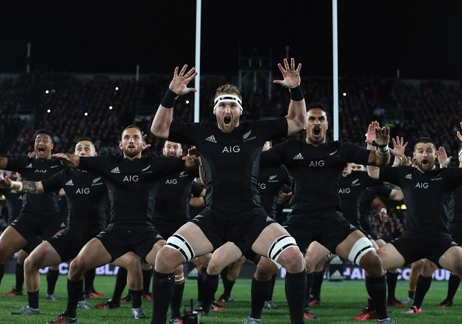

YouTubeなどで過去のクラシコ（バルセロナ対レアルマドリード）を探し観戦している。個人的には2011－13がお勧めである。特に、シャビとイニエスタを筆頭にくみ上げられた当時のバルセロナのパスサッカーには誰もが芸術を感じるものがあったと思う。

高校の時にラグビーを少しかじっていたこともあり、ラグビー観戦の面白さに気付いた。今となっては、やはりラグビーは、するものではなく見るものだとしみじみおもう。
トップページへ